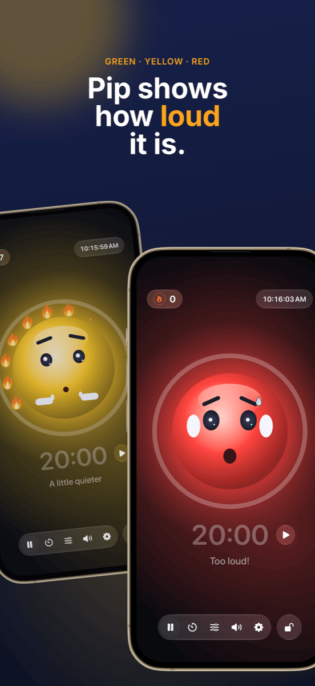

Classroom Management: Seating, Groups & Noise Under Control
Good classroom management is barely noticeable, and that is exactly the point: the lesson flows, transitions work, and the time goes to learning rather than to reminders. Three questions come up again in almost every lesson: Who sits where? Who works with whom? And how loud is it allowed to be right now? This guide shows a workflow that answers all three before they turn into problems.
What classroom management actually means
Classroom management is more than discipline. Back in the 1970s, the US psychologist Jacob Kounin showed that effective teachers differ less in how they react to disruptions than in how well they prevent them. His characteristics include:
- Withitness: the class senses that you have the whole room in view.
- Smoothness and momentum: transitions between phases don’t eat up minutes, and the lesson keeps its pace.
- Group alerting: everyone stays involved, not just whoever is called on.
Much of this is attitude and experience. Part of it, though, is simply organisation, and that can be prepared. That is where the following workflow comes in.
Step 1 · Once, up frontSet up the class list once, use it everywhere
The biggest time sink is doing things twice. Export your class list once as a CSV from Excel, Numbers or Google Sheets. Both Platzwahl and Team Zufall import that file directly, and the whole class is set up in seconds. Both apps store names only locally on the device, with no account and no cloud. With student data, that is not a detail but a requirement.
Step 2 · The foundationThe seating chart: preventing disruptions before they start
The seating arrangement is the most effective classroom management tool, because it works every minute without you saying a word. Who sits next to whom decides side conversations, distraction and focus. Proven principles:
- Separate restless students, not only side by side but also front to back.
- Use proximity: students who need support or drift off easily sit in your direct line of sight.
- Spread calm anchors between livelier students.
- Change regularly, for example after the holidays or monthly, so no fixed trouble corners form.
With Platzwahl you set these rules per student (disruption risk, front seat, preferred neighbours, separations) and let the chart be computed automatically. A score shows how well all rules are met. The finished chart goes on your desk as a PDF. More on this: Classroom seating arrangements and Create a seating chart.
 Step 3 · Cooperative phases
Step 3 · Cooperative phases
Fair groups, no arguments
“Can we pick our own groups?” is the question that loses many group phases before they start. Free choice takes time, cements cliques and always leaves the same students over. Deliberate grouping is fair but laborious, and hardly worth it for ten minutes of pair work.
For the many short phases, random is the best solution: it’s quick, nobody feels favoured, and the class learns to work with everyone. What matters is that the draw is visible. When the class sees the names being shuffled on the projector, there is nothing to argue about.
In Team Zufall you choose the number of teams, deselect absent students with a tap and draw. The teams can be projected on the wall or exported as a PDF. For longer projects where certain combinations must be avoided, deliberate grouping remains the better choice. An overview: 5 ways to group students.
 Step 4 · Work phase
Step 4 · Work phase
Make noise visible instead of constantly shushing
Group work is loud, and that’s fine. It becomes a problem when nobody knows how loud is too loud and you spend the lesson saying “Shh!”. Reminders wear out quickly and interrupt exactly those who are concentrating.
Three things work better:
- Agree on volume: decide with the class what applies in which phase. Whispering for silent work, partner voice for group work.
- Show the volume: a noise meter on the projector gives the class the feedback you would otherwise have to give out loud.
- Reward quiet instead of punishing noise: if the meter only turns red and takes something away, it quickly becomes a pressure tool, and individual loud students become the class scapegoat. A shared goal the class can reach works better.
That is exactly what Ruhe is built for: a mascot shows green, yellow or red, and as long as it stays quiet, one flame after another lights up. Twelve flames make a full wreath, and that gets celebrated. You set the thresholds for yellow and red to suit the phase, or let Ruhe calibrate itself. A timer shows the time left in the work phase, the projector view puts everything large on the wall, and the controls stay on your iPad. Ruhe only measures volume; nothing is recorded.

Step 5 · Wrap-upMake success visible
At the end of the lesson, what counts is what worked. A full wreath of flames is a good reason for a short word of praise to the whole class. And if it didn’t work today, that’s a chance to think together about why, without looking for culprits. Recurring problems at certain tables are a sign that the next seating chart is due.
What a lesson with this workflow looks like
| Phase | What happens | Tool |
|---|---|---|
| Before the lesson | The seating chart is out, everyone knows where to sit. No scramble for seats. | Platzwahl |
| Opening | Whole-class phase in the fixed seating arrangement. | – |
| Transition | Teams are drawn on the projector, absent students are deselected. | Team Zufall |
| Work phase | Noise meter and timer run on the projector, the class collects flames. | Ruhe |
| Wrap-up | Back to the fixed seats, a quick look at the wreath of flames. | Ruhe |
Frequently asked questions
What does classroom management mean?
Classroom management covers everything a teacher does so that as much lesson time as possible is actually learning time: rules and routines, room layout and seating, smooth transitions and an eye on the whole class. It is less about reacting to disruptions than about keeping them from happening in the first place.
What helps when a class is constantly too loud?
First agree with the class which volume is fine in which phase. Then make the volume visible instead of reminding them over and over, for example with a noise meter on the projector. What works best is recognising quiet phases rather than only sanctioning noise.
Is a classroom noise meter a good idea?
Yes, as long as it is a shared goal and not a tool for punishment. The thresholds should fit the phase: group work may be louder than silent work. A noise meter that rewards quiet instead of punishing noise keeps individual loud students from becoming the class scapegoat.
Should groups be random or deliberately assigned?
Both have their place. For short, frequent pair and group phases, random is ideal: quick, fair and no argument about who works with whom. For longer projects or tricky combinations, deliberate grouping is worth the effort. The seating chart itself should always be planned deliberately.